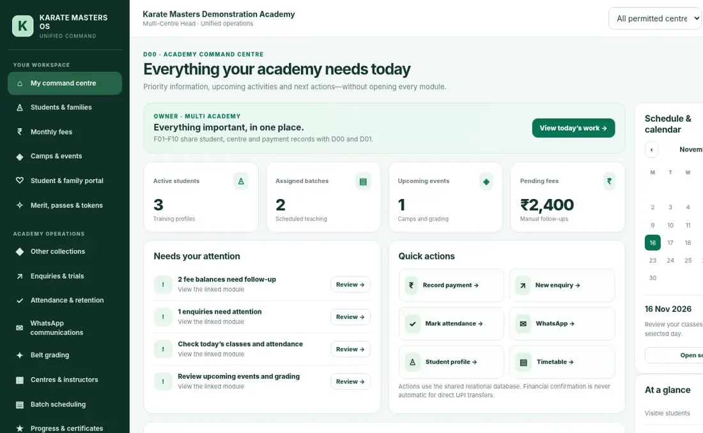

Operate with clarity
Admissions, batches, attendance, fee collection, class changes and centres—linked in one workspace.
FOR OWNERS & ADMINSOne connected operating system for the people behind every karate journey—masters, instructors, students and parents.

Stop switching between notebooks, spreadsheets, payment messages and separate apps. Your academy's work belongs to the same trusted student record.
Admissions, batches, attendance, fee collection, class changes and centres—linked in one workspace.
FOR OWNERS & ADMINSGrading, student progress, guided drills, missions and verified achievements support thoughtful instruction.
FOR MASTERS & INSTRUCTORSParents and students can view authorised schedules, progress, certificates and participation opportunities.
FOR STUDENTS & PARENTSStart as an independent master. Add batches, instructors and centres as you grow, without starting your student directory again.
The integrated beta connects our approved foundation modules and the new guided-practice experience. Individual workflows remain subject to final acceptance and security validation.
A shared directory with guardian links, academy membership, role-scoped profiles and parent access.
Monthly and one-time charges, partial payments, fee follow-ups and manual UPI verification.
Batch attendance, absence notices, follow-ups and centre-level visibility into participation.
Grading sessions, tournaments, training camps, progress reviews and approved certificate links.
Structured home and academy practice with drill libraries, assignments and instructor reviews.
Verified rewards, practice missions and separate event commitment tokens and paid passes.
Designed as one journey—from the first enquiry to a student's long-term training progress.
Set up centres and batches, enrol learners and link authorised guardians.
Track attendance, payments, events, classes and instructors.
Plan drills, recognise milestones, keep families engaged and reduce preventable dropouts.
Three subscription categories are planned. Commercial prices, limits and billing will be confirmed before any paid enrolment.
For a focused solo dojo or single teaching team.
For growing teams, instructors and regular classes.
For owners managing more than one location.
We are preparing a controlled pilot with up to ten masters and academies. Tell us about your teaching operation and we can discuss a suitable trial once onboarding, safeguards and data handling are ready.
Important: The current live demo uses fictional records. Do not upload actual student names, phone numbers, payments or children's personal data to it.
Prepare an email application—no data is stored by this website.
We're making the next steps transparent from the beginning.
The software is in integrated demonstration and private-pilot preparation. It is not approved for unrestricted real student data, financial operations or paid production use yet.
The current version runs in your browser. An installable Progressive Web App is planned for supported Windows, Mac and mobile browsers, using the same online account and centrally hosted data. Reliable offline editing would be a separate capability.
Our proposed model includes permitted student and family access within the academy subscription. Exact limits and plan terms will be confirmed before paid launch.
The platform is designed for organisation-scoped access. Independent multi-tenant security testing must be completed before real-user launch. No academy should gain cross-organisation access by default.
The demonstration includes manual fee-verification workflows and manually shared communication templates. Live payment gateways, Google Sign-In configuration and automated messaging are not yet launched.
MastersCorner is the wider martial-arts platform. Karate Masters OS is its dedicated academy operations product. They can share brand navigation without mixing academy-private data into public discovery listings.